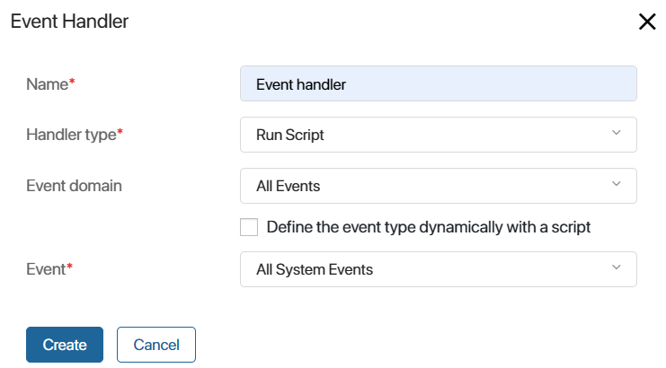
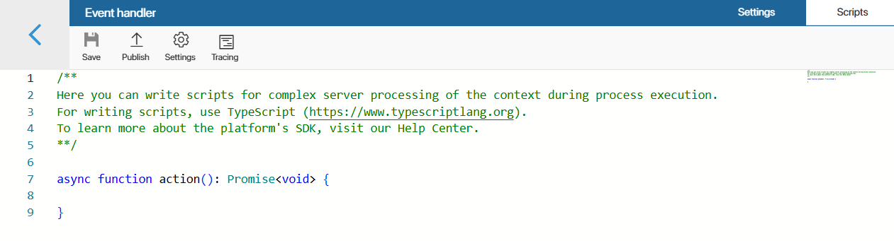
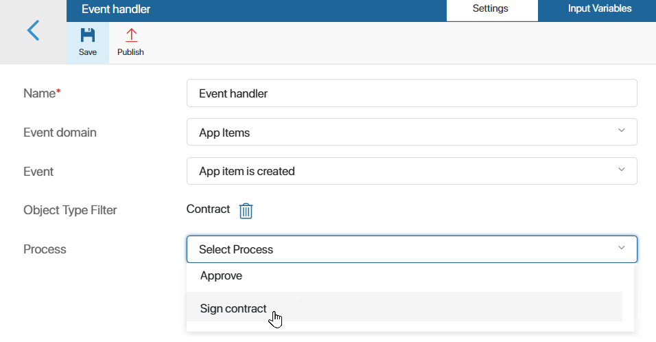
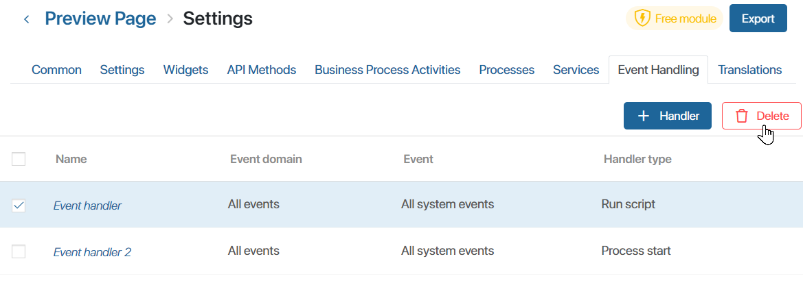

You can configure the handling of various system events in a custom module.
An event handler triggers a specific action in the system after an event occurs. It can be useful when creating complex modules.
When an event occurs, the following actions can be performed:
- Executing a script created in the handler.
- Starting a business process associated with the module.
- Sending a message to an external microservice. It is available only in BRIX On-Premises.
For example, you can create a handler in a module that launches a process after a user edits an app item.
Create an event handler
- Go to Administration > Modules.
- Hover the mouse over a module and click the gear icon.
- Go to the Event Handling tab.
- Click +Handler and enter the information in the window that opens.

- Name*. Enter the name of the handler.
- Handler type*. Select an activity that will occur after each event:
- Run Script. Executes a script created in the handler.
- Run Process. Executes a business process created in the module on the Processes tab.
- Send Message to Service. Sends a message to an external microservice. This activity is available only in BRIX On‑Premises.
- Event domain. Select an area where the handler will listen for events. You can choose from the following domains:
- All Events.
- App Items. Select the app whose events are to be processed in the Object type filter field that appears. If you do not select an app, the module will track the events of all existing apps in the system. It is possible to record the creation, update, status change, and removal of an item, and comments added to an item’s activity stream.
If you have set event tracking for the creation, update, or deletion of an item and specified an app, the EventContext property is added to the script. It contains strictly typed data of the app item and the corresponding event.
Please note that if an app is selected, it is impossible to export the module. This is due to the restriction on exporting a module associated with an app that is not part of the module. You can create a solution and export the module and the app as part of it.
- Tasks. The handler will record events related to the creation, modification, cancelation, or termination of CRM tasks. In the Task type filter field that appears, specify the type of activity whose changes will be tracked by the module: All CRM Tasks, Call, Email, Webinar, or Meeting. To learn more about setting up a handler of this type, see the Event handling in CRM tasks article.
- Apps. The handler tracks events of exporting or importing data from the system apps.
- Files. Allows you to record the creation, editing, and deletion of a file, adding comments to it, and changing access settings.
- Directories. Tracks the creation, editing, deletion, and changing of access settings for folders in the Files workspace.
- Duplicates. The action in the handler is triggered when duplicate records are merged. You can see an example of such a handler in Event processing in duplicates article.
- Modules. The handler is triggered when a module is installed, enabled, updated, or disabled.
- Settings. Records the editing of additional parameters associated with the company, a workspace, or an app.
- Users. The events related to user account management are tracked, as well as the user's actions, such as status changes, authorization error, logout, etc.
- Define the event type dynamically with a script. This option is available if the All Events or App Items domain is selected. When it is enabled, the handler can track several event types at once, which are specified in the filtering script. Event filtering is performed before the handler itself is started. For example, you can configure one handler to track events for items in different apps.
начало внимание
Event filtering is available by default in the BRIX SaaS and On-Premises edition, starting from version 2025.1. You can use it in the On-Premises edition version 2024.11 by enabling the enableEventBusDynamicFiltration flag. Read more about it in the Modify BRIX Enterprise parameters and Modify BRIX Standard parameters articles.
конец внимание
- Event. Select an event that will trigger the handler. When dynamic event type is enabled, the field is not displayed, because the events to be tracked are defined in the script.
- Click the Save button.
- For the Run Script type: Write a script on the Scripts tab. You can access variables from other workspaces and custom modules by configuring optional dependencies.
начало внимание
Enabling optional dependencies and using the Imports constant is by default available in BRIX On-Premises edition starting from system version 2024.2. To use optional dependencies in earlier versions, the system administrator needs to enable the feature flag allowScriptImportsDependencies. For more information, see Modify On-Premises Enterprise parameters and Modify On-Premises Standard parameters.
конец внимание
To create a dependency on the top panel, click Settings and add workspaces and modules to the list. They can then be accessed via the Imports global constant. A module with optional dependencies can be exported without restrictions.

- For the Run Process type: Select the business process created within the module. Then, on the Input Variables tab, map variables from the process context to the event properties: object, name, author, and so on.
A limited set of system fields is provided for events: identifier, name, description, event time, object name, author, etc. There are also individual properties for each event, referring to the selected domain and action type.
The configuration on the Input Variables tab allows you to define data sources for properties from the process context. It is done depending on the handler to be implemented and the final user’s need.

Important: The Input Variables tab displays properties that are present in the process context at the time the process is linked to the handler. If the process context has been changed, the new variables will not appear in the handler settings. You must recreate and configure the event handler by linking the same business process to it.
- For Send Message to Service type: Specify the microservice.
- If you have enabled dynamic event type, set a filter to select the events that the handler tracks. To do this, click Calculated with a script on the Settings tab.

The Scripts tab will open. In the filter() method, specify the event types to be tracked. The available options depend on the domain selected when creating the handler:
- All Events. You can specify event types from different domains. The list is limited. When you create a filter, you will see tooltips with possible values.
- App Items. Only events for app items are available.
Read more about scripting and the peculiarities of dynamic filtering in BRIX TS SDK.
The generated filter will be applied after the event handler is published and the module is enabled. The handler will be triggered by system events that match the specified conditions.
- Publish the handler.
This way you can add several event handlers to a custom module. For example, when you change the item status in the Orders app, a business process will be launched. By using a script or a gateway you can activate different process branches depending on the status that the app item acquires.
You can also learn about using handlers with domains associated with the CRM system solution in the following articles: Event handling in CRM tasks and Event processing in duplicates.
Trace handler scripts
If tracing is enabled for a handler of the Run Script type in the Administration > Developer Tools workspace, you can analyze the execution of its script. This allows you to evaluate the duration of individual requests, optimize the code, and identify the causes of errors.
To view the traces list, open the Event Handling tab in the module settings, select the required handler and click Tracing in the top panel. For more information about trace configuration and information on the trace page, see the Trace server scripts article.
Disable a handler
To disable a handler, go to the Event Handling tab and click on the three dots icon opposite the handler’s name. Select Cancel Publication. Now the handler will not be triggered when the event occurs.
You can also delete an event handler. To do this, go to the Event Handling tab, check the box next to one or more handlers, and click the Delete button in the upper right corner of the page.
